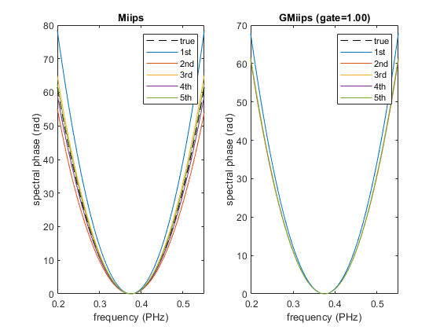
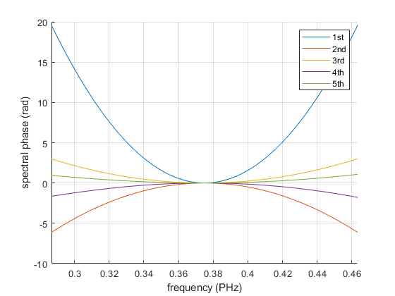

Simulation of GMiips with 2nd order spectral phase
Contents
Set up chirped Gaussian pulse
We set a 5 fs pulse with central wavelength of 800 nm, and a chirp of 100 fs^2.
p = gaussianPulse('f0',300/800, 'fwhm', 5, 'units', 'fs', 'dt', 0.5); GDD = 100; % fs^2 p.polynomialPhase([GDD 0 0])
Simulate Miips and GMiips
The choice of the Miips parameters is crucial for the accuracy of Miips. Specifically one gets more accurate results for low values of 'tau'.
maxGDD = 200; % fs^2
tau = p.calculateShortestDuration();
amp = maxGDD/tau^2;
phasesteps = linspace(-2*pi, 2*pi, 500);
m = {};
m{1} = IterativeGmiips(p, amp, tau, phasesteps, 'gateWidth', inf);
m{2} = IterativeGmiips(p, amp, tau, phasesteps, 'gateWidth', 1);
ax_title{1} = 'Miips';
ax_title{2} = sprintf('GMiips (gate=%.2f)', m{2}.gateWidth);
% Add a few more iterations each iterations should reduce the error. The
% property 'retrievedPhase' always stores the cumulative retrieved phase.
figure();
ax(1) = subplot(1,2,1);
ax(2) = subplot(1,2,2);
for i = 1 : 2
plot(ax(i), p.frequencyArray, p.spectralPhase, 'k--', m{i}.frequencyArray, m{i}.retrievedPhase);
xlim(ax(i), [-2, 2] * p.bandwidth + p.centralFrequency)
hold(ax(i), 'on');
xlabel(ax(i), sprintf('frequency (%s)', p.frequencyUnits));
ylabel(ax(i), 'spectral phase (rad)');
title(ax(i), ax_title{i});
end
for i = 1 : 2
for iteration = 1 : 4
m{i}.newIteration();
plot(ax(i), m{i}.frequencyArray, m{i}.retrievedPhase);
end
legend(ax(i), 'true', '1st', '2nd', '3rd', '4th', '5th');
end
 The results of single iterations are available in the 'iterations' property. If everything goes well, the retrieved phase should decrease at each iteration.
figure(); ax(1) = subplot(1,2,1); ax(2) = subplot(1,2,2); for i = 1 : 2 hold(ax(i), 'on'); for j = 1 : length(m{i}.iterations) plot(ax(i), m{i}.frequencyArray, m{i}.iterations{j}.retrievedPhase); end xlim(ax(i), [-2, 2] * p.bandwidth + p.centralFrequency) ylim(ax(i), [-10, 10]); legend(ax(i), '1st', '2nd', '3rd', '4th', '5th'); xlabel(ax(i), sprintf('frequency (%s)', p.frequencyUnits)); ylabel(ax(i), 'spectral phase (rad)'); title(ax(i), ax_title{i}); hold(ax(i), 'off'); grid(ax(i), 'on'); end